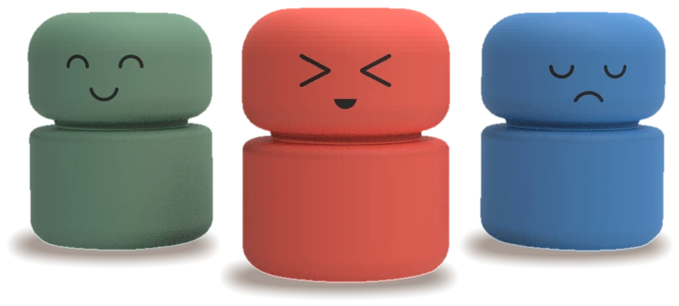

איך משחקים עם KIKO
צעדים קטנים, חוויה חושית גדולה

⏱️ ממהרים? קראו רק את הכותרות🖼️ אוהבים תמונות? עברו על הכרטיסיות📖 רוצים להעמיק? לחצו על ＋
1 · מי אנחנו
KIKO הוא משחק. וגם תהליך.
KIKO באמת משחק – אבל מאחורי כל חלק מחכה תחושה חדשה. אנחנו כאן כדי להדריך אתכם איך לשחק נכון, צעד אחר צעד.
🧸משחק
דמות עם פנים, צבעים וחלקים שמרכיבים לבד. {הילד|הילדה} פוגש{|ת} חבר, לא תרגיל.
✋חוויה חושית
כל חלק מרגיש אחרת: חלק, רך, מחוספס, עם בליטות או עם רטט. כך מכירים תחושות חדשות דרך הידיים.
🐢בקצב של {הילד|הילדה}
חשיפה הדרגתית: מתחילים במה שנעים ומוכר, ומתקדמים רק כש{הוא|היא} מוכן{|ה}.
למה צריך הדרכה בכלל?
היכרות הדרגתית עם תחושות היא חלק מוכר מעבודה טיפולית עם ילדים, ויש לה הרבה שיטות וגישות. מבחוץ זה נראה כמו "סתם לשחק", אבל הדרך שבה מציגים את המשחק משנה הכול: אותו חלק יכול להיות מסקרן כשמציעים אותו בעדינות, ומלחיץ כשמבקשים לגעת בו מיד.
לכן לא יצאנו מנקודת הנחה שכולם יודעים מה לעשות. החוברת הזו מסבירה בדיוק מה עושים בכל שלב, איך יודעים שאפשר להתקדם, ומה עושים כשקשה. כשברור מה עושים – פשוט עושים.
💙 KIKO לא מחליף טיפול מקצועי. אם {הילד|הילדה} בטיפול – שתפו את המטפל/ת ותתאימו יחד את הקצב.
לפני שמתחילים
5 כללי זהב
אם זוכרים רק דבר אחד מהחוברת – זה העמוד.
- 🧭{הילד|הילדה} מוביל{|ה}מציעים, לא מבקשים. מחכים ליוזמה.
- ⏱️קצר ומתוק3–10 דקות מספיקות. עדיף קצר וטוב.
- 🤝בלי להכריח"לא" זו תשובה. מכבדים אותה.
- 🌟מסיימים כשטובעוצרים ברגע נעים, לא אחרי בכי.
- 🔁אותו טקסאותה שעה, מקום ומשפט פתיחה.
למה זה עובד?
כשילד/ה יודע/ת מה עומד לקרות ומרגיש/ה שיש לו/ה שליטה – קל יותר לנסות דבר חדש. טקס קבוע יוצר צפיות, מפגש קצר שומר על חוויה טובה, וסיום ברגע נעים גורם לרצות לחזור. ההתקדמות מגיעה מהרבה מפגשים קטנים וטובים, לא ממפגש אחד ארוך.
5 שלבים, צעד אחר צעד
עולים שלב רק כשהקודם נעים. ירידה שלב אחורה היא חלק מהדרך – לא כישלון.
1 מתכוננים2 מתבוננים3 מדגימים ובוחרים4 נוגעים5 חוקרים
1📖
מתכוננים
קוראים יחד את "הסיפור של KIKO" (בעמודים הבאים) – כמה פעמים, כמה ימים לפני המפגש הראשון.
✓ ממשיכים כש…{הילד|הילדה} מסתכל{|ת} בכרטיסיות בנוחות, ואולי מצביע{|ה} על KIKO.
✋ אם קשה…קוראים רק 2–3 כרטיסיות, ומשאירים את הסיפור במקום שאפשר לחזור אליו.
טיפים לשלב הזה
קראו בקול רגוע ובאותו נוסח בכל פעם. אפשר לתלות את הכרטיסיות במקרר או ליד מקום המשחק. אם {הילד|הילדה} מדבר{|ת} מעט – הצביעו על התמונות ותנו {לו|לה} להצביע בחזרה.
מתבוננים
מניחים את KIKO בטווח ראייה – על השולחן או על השטיח – בלי לבקש לגעת. משחקים לידו במשהו אחר.
✓ ממשיכים כש…{הילד|הילדה} מסתכל{|ת}, מתקרב{|ת} או מושיט{|ה} יד מעצמ{ו|ה}.
✋ אם קשה…מרחיקים קצת את KIKO, ומשאירים רק את הדמות – בלי החלקים.
טיפים לשלב הזה
אל תפנו תשומת לב מיוחדת ל־KIKO – פשוט שיהיה שם. מבט ארוך או התקרבות הם כבר התקדמות. אם {הילד|הילדה} מתעלם{|ת} לגמרי, זה בסדר: נסו שוב במפגש הבא.
מדגימים ובוחרים
המבוגר נוגע בחלק ומתאר במילים ("זה רך… זה עם קוצים קטנים"). אחר כך מציעים שני חלקים ושואלים: "איזה?"
✓ ממשיכים כש…{הילד|הילדה} מצביע{|ה}, בוחר{|ת} או מנסה לחקות את התנועה.
✋ אם קשה…מציעים רק חלק אחד, הכי עדין (החלק החלק), ומדגימים שוב.
טיפים לשלב הזה
תארו מה אתם מרגישים, בלי לשאול "את/ה רוצה לגעת?". בחירה בין שניים נותנת תחושת שליטה – וגם "אף אחד" היא בחירה לגיטימית. התחילו מהחלק הכי עדין שקיבלתם בהתאמה.
נוגעים
מגע קצר ביוזמת {הילד|הילדה}: אצבע אחת, אחר כך כף יד. אפשר שהחלק יישאר על השולחן ולא ביד.
✓ ממשיכים כש…{הוא|היא} נוגע{|ת} שוב ושוב בלי סימני מצוקה, ב־2–3 מפגשים רצופים.
✋ אם קשה…חוזרים לשלב 3, או עוברים לחלק עדין יותר. מסיימים במגע שהצליח.
טיפים לשלב הזה
שבחו את הניסיון, לא את התוצאה: "נגעת בעדינות!". אל תחזיקו את היד של {הילד|הילדה} ואל תצמידו את החלק לגוף. אם {הוא|היא} מושך{|ת} את היד – זה הסימן לעצור לרגע.
5
חוקרים ומשחקים
לוחצים, מגלגלים על היד, טופחים כדי להרגיש רטט, מרכיבים ומפרקים. מוסיפים חלק חדש רק כשהקודם כבר אהוב.
✓ ממשיכים כש…{הילד|הילדה} חוזר{|ת} ל־KIKO מעצמ{ו|ה} ומבקש{|ת} עוד. אפשר להאריך את הזמן ולהוסיף חלק.
✋ אם קשה…חוזרים לחלק המוכר והאהוב, ומסיימים בו.
טיפים לשלב הזה
עכשיו אפשר לשלב את KIKO בשגרה: לפני השינה, בהמתנה, במעברים. ספרו לנו באזור האישי איך היה – כך נדייק את ההתאמה הבאה ונמליץ על החלקים הנכונים.
טיוטה · בבדיקה מקצועית
איך יודעים?
מתי ממשיכים ומתי עוצרים
הגוף של {הילד|הילדה} מספר לנו הרבה לפני המילים.
😊 סימנים טובים – אפשר להמשיך
- מסתכל{|ת}, מתקרב{|ת}, מושיט{|ה} יד
- מחייך{|ת}, צוחק{|ת}, משמיע{|ה} קולות שמחים
- חוזר{|ת} לאותו חלק שוב ושוב
- מבקש{|ת} "עוד" (במילים, בסימן או בכרטיס)
🛑 סימנים לעצור או להאט
- מסיט{|ה} מבט, מסתובב{|ת} או מתרחק{|ת}
- דוחף{|ת} את KIKO או מושך{|ת} את היד
- גוף מתוח, מכסה פנים או אוזניים
- בוכה, צועק{|ת} או מראה כרטיס "די"
מה עושים כשמופיע סימן לעצור?
עוצרים בשקט ובלי ויכוח – מרחיקים את החלק ואומרים "בסדר, KIKO נח". אחר כך חוזרים למשהו שכבר הצליח, ומסיימים בו. בפעם הבאה מתחילים שלב אחד אחורה. עצירה בזמן בונה אמון – ובזכותה {הילד ירצה|הילדה תרצה} לחזור.
מבנה של מפגש
👋פתיחהאותו משפט בכל פעם: "עכשיו זמן KIKO". אפשר להראות את כרטיס הסיפור.
🧩משחק3–10 דקות בשלב שבו אתם נמצאים. {הילד|הילדה} מוביל{|ה}.
😴סיום"KIKO הולך לנוח בקופסה". מילה טובה, ואז פעילות אהובה.
3 · לקרוא יחד
הסיפור של KIKO
סיפור קצר שמכין את {הילד|הילדה} למפגש: מה יקרה, מה מותר, ומה עושים כשלא נעים.
✂️ מדפיסים, גוזרים לאורך הקו המקווקו, וקוראים יחד – כרטיס אחד בכל פעם, באותו סדר. אפשר להחזיק את הכרטיסים ליד KIKO בזמן המשחק.
1זה KIKO. KIKO הוא צעצוע שאפשר לגעת בו, להרכיב אותו ולשחק איתו.
2ל־KIKO יש חלקים. כל חלק מרגיש אחרת: חלק, רך, מחוספס או עם בליטות.
3קודם אני רק {מסתכל|מסתכלת} על KIKO. מותר לי להסתכל כמה שאני {רוצה|רוצה}.
4מי שמשחק איתי מראה לי איך נוגעים ב־KIKO.
5👆
אני {יכול|יכולה} לבחור חלק אחד שמעניין אותי.
6 ☝️
☝️אני {נוגע|נוגעת} בחלק לאט ובעדינות – קודם עם אצבע אחת, ואחר כך עם כל היד.
7לפעמים משהו מרגיש לי מוזר או לא נעים. זה בסדר.
8✋
אז אני {יכול|יכולה} להגיד "די" או להראות את הכרטיס. נחים קצת, ואפשר לנסות חלק אחר.
9כשמשהו מרגיש לי נעים, אני {ממשיך|ממשיכה}: ללחוץ, לגלגל ולטפוף. KIKO אפילו עושה רעש!
10בסוף KIKO הולך לנוח בקופסה. נשחק שוב בפעם אחרת. אני {גאה|גאה} בעצמי!
איך קוראים סיפור כזה נכון?
קוראים בקול רגוע, בגובה העיניים, באותו נוסח בכל פעם – החזרה היא מה שיוצר ביטחון. אפשר לקרוא בכל יום כמה ימים לפני המפגש הראשון, וגם רגע לפני כל מפגש. אם {הילד|הילדה} רוצה לדלג – מדלגים. אם {הוא|היא} חוזר{|ת} לכרטיס מסוים – נשארים בו.
כרטיסי בחירה
לא תמיד יש מילים. עם הכרטיסים {הילד|הילדה} יכול{|ה} להראות מה {הוא|היא} רוצה – ואנחנו מקשיבים.
🤲עוד
✋די
⏸️הפסקה
☝️רוצה לנסות
איך משתמשים בכרטיסים?
מניחים את הכרטיסים ליד KIKO בכל מפגש. כש{הילד|הילדה} מראה כרטיס – מגיבים מיד ובדיוק לפיו, גם כשזה "די". כך {הוא|היא} לומד{|ת} שהבחירה {שלו|שלה} נשמעת, וקל יותר לנסות.
לוח המעקב שלנו
דקה אחרי כל מפגש: באיזה שלב הייתם, עם איזה חלק, ואיך היה.
| תאריך | שלב (מקיפים) | החלק | איך היה | הערות |
|---|
1 מתכוננים2 מתבוננים3 מדגימים ובוחרים4 נוגעים5 חוקרים😀 נהדר · 🙂 טוב · 😐 ככה · 😟 קשה